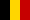
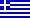

EuCW - DET EUROPEISKA TELEGRAFIFÖRBUNDET
c/o E.C.M. of AGCW-DL

|
EuCW - DET EUROPEISKA TELEGRAFIFÖRBUNDET
|
|
Listans format (sorterad i alfabetisk ordning):
Klubbens förkortning och land
Klubbens riktiga namn
(Engelskt namn om det finns och skiljer sig från det riktiga namnet)
klubbens kategori (en av
Vanlig CW klubb,
QRP-klubb,
E.C.M. anropssignal, namn, post- och/eller emailadress
 AGCW-DL (Tyskland)
AGCW-DL (Tyskland)
Arbeitsgemeinschaft CW DL (Activity Group CW DL)
Vanlig CW klubb
ECM: IK2RMZ, Martin
E-mail...eucw (at-symbol) agcw.de...
 BQC (Nederländerna)
BQC (Nederländerna)
Benelux QRP Club
QRP-klubb
ECM: PAØWDW, Wim F.K. Witt, Valkhof 53, 2261 HS Leidschendam
E-mail...wim (at-symbol) witt.fol.nl...
BTC (Belgien)
Belgian Telegraphy Club
Vanlig CW klubb
ECM: ON7VU, Luc Vinck, Boekweitlaan 3, B-2500 Lier
E-mail...on7vu (at-symbol) vts.be...
CFT (Belgien)
Club Francophone Télégraphiste
Fransktalande klubb
ECM/Pres: ON4LDL, Michaux Robert, 124 R. Neuve, 6061
Montignies-sur-Sambre,
Email...on4ldl (at-symbol) skynet.be...
 CTC (Kroatien)
CTC (Kroatien)
Croatian Telegraphy Club
Vanlig CW klubb
ECM/Pres.: 9A3FO, Mladen Buzic, Franjevacka 5, HR-42220 Novi
Marof
Email...ctc (at-symbol) hamradio.hr...
 CTCW
(Portugal)
CTCW
(Portugal)
CT CW Club
Kunskap i portugisiska krävs
ECM: CT1BQH, João C. Morgado, r do Frono Grilo Lote 9-2e, P-2330
Entroncamento
Email...ct1bqh (at-symbol) sapo.pt...
 EACW (Spanien)
EACW (Spanien)
EA-CW Club
Vanlig CW klubb
ECM: EA3RE, Tony Herrera Caro, Travesera de Montigala, 48 4 A,
08917 Badalona (Barcelona),
E-mail:...ea3re (at-symbol) yahoo.es...
EA-QRP-C (Spanien)
EA-QRP Club
QRP-klubb
ECM/Pres: EA5AU,
E-mail:... EA5AU (at-symbol) ure.es...
 EHSC (Belgien)
EHSC (Belgien)
Radio Telegraphy Extremely High Speed Club
QRQ-klubb, minst hastigheten 300
ECM: vakant
 FISTS (Storbritanien)
FISTS (Storbritanien)
FISTS CW Club - The International Morse Preservation
Society
Vanlig CW klubb
ECM: M0BPT, Robert D. Walker, 125, Devereux Road, West Bromwich B70 6RQ,
E-mail:...M0BPT (at-symbol) blueyonder.co.uk...
FOC (Storbritanien)
First Class CW Operators Club
CW-klubb begränsad till 500 medlemmar
ECM: G3LIK, Mick Puttick, 21 Sandyfield Crescent, Cowplain,
Waterlooville Portsmouth PO8 8SQ.
E-mail:...mickg3lik (at-symbol) ntlworld.com...
G-QRP (Storbritanien)
G-QRP Club - Devoted to Low Power Communication
(G-GRP-klubben - För lågeffektkommunikation
QRP-klubb
ECM: G3XJS, Peter Barville, Felucca, Pinesfield Lane, Trottiscliffe,
West Malling, Kent, ME19 5EN, England HP15 6UG,
E-mail:...peter (at-symbol) barville.freeserve.co.uk...
GTC (Grekland)
Greek Telegraphy Club
Vanlig CW klubb
ECM: SV1DKL, Maliakis Efstathios, L.Irakleiou 346, N.Ionia,
GR-14231,
E-mail:...SV1DKL (at-symbol) hotmail.com...
 HACWG
(Ungern)
HACWG
(Ungern)
Hungarian CW Group
QRQ-klubb, minst hastigheten 150
ECM: HA3NU, László Weisz, Postbox 169, Rakoczi U16, Szegzard.
E-mail:...jozsi (at-symbol) kvantum.tolna.net...
HCC (Spanien)
Hispania CW Club
EA-anropssignal krävs för medlemsskap
HSC
(Tyskland)
Radio Telegraphy High Speed Club
QRQ-klubb, minst hastigheten 125
ECM+Secr: DL7AKC, Jens Sperling, John-Locke-Str. 18, D-12305
Berlin.
E-mail:...hsc (at-symbol) darc.de...
 HTC (Schweiz)
HTC (Schweiz)
Helvetia Telegraphy Group
Vanlig CW klubb
ECM: HB9DEO, Robert Zanini, Grütstr. 40, CH-8134 Adliswil (ZH),
E-mail:...hb9deo (at-symbol) uska.ch...
 INORC (Italien)
INORC (Italien)
Italian Naval "Old Rhythmers" Club
Flottist CW-klubb
ECM: I1QOD, Alberto Frattini, v. S. Domenico 69, I-17027 Pietra
Ligure (SV)
E-mail:...i1qod (at-symbol) inorc.it...
IS QRP (Italien)
Associazione Radioamatoriale Sardinia QRP Club
QRP-klubb
ECM: IS0VSU Franco Bachetti, V. Santa Rita 9, 09047 Selargius
(CA)
E-mail:...is0vsu (at-symbol) sardiniaqrp.com...
Club mail:...is-qrp (at-symbol) sardiniaqrp.com...
I-QRP (Italien)
Italian QRP Club
QRP-klubb
ECM: I3FFE, Franz Falanga, CP 20, I-31034 Cavaso (TV)
E-mail:...i3ffe (at-symbol) quipo.it...
ITC (Italien)
ARI Club Radiotelgrafisti (Italian Telegraphy Club)
Generic cw club
ECM: IN3VST, Vito Vetrano, Verdi 27/A, I-39012 Merano (BZ)
E-mail:...in3vst (at-symbol) tin.it...
LZCWC (Bulgarien)
LZ CW Club - Contest group
CW contest club
Contact: LZ2AU, Antoaneta Encheva, P.O.Box 189, Gorna Oryahovitza,
5100
E-mail1:...lz2au (at-symbol) qsl.net...
E-mail2:...lz1af (at-symbol) isasat.net...
 MCWG
(Makedonien)
MCWG
(Makedonien)
Macedonian Telegraphic Group
QRQ club, min. speed 150
ECM: Z35M, Vladimir Kovaceski, Partizanskaja 65, 96330 Struga,
FYROM
E-mail:...Z35M_99 (at-symbol) yahoo.com...
 OE-CW-G (Österrike)
OE-CW-G (Österrike)
OE-CW Group
Vanlig CW klubb
ECM: OE6FYG, Herbert Lafer, Speltenbach 55, A-8280 Fürstenfeld
 OHTC
(Finland)
OHTC
(Finland)
OH Telegraphy Club
QRQ club, min. speed 150
ECM: OH6LBW, Janne Karresuo, Timonviita 3, SF-60150 Seinajoki,
E-mail:...janne.karresuo (at-symbol) kolumbus.fi...
 OK-QRP
(Tjeckien)
OK-QRP
(Tjeckien)
OK QRP Club
QRP-klubb
ECM: OK2BMA, Pavel Cunderla, Slunecna 4558, CZ-79005 Zlin
E-mail:...p.cunderla (at-symbol) sendme.cz...
RTC (Tyskland)
Radio Telegraphy Club e.V. - RTC
Vanlig CW klubb
ECM.: DL4CF, Jörg H. Vollbrecht, Steingasse 3, 06642 Reinsdorf,
E-mail...dl4cf (at-symbol) arrl.net...

 SCAG
(Skandinavien)
SCAG
(Skandinavien)
Scandinavian CW Activity Group
Nordic CW club
ECM: SM6DPF, Stig Hansen, Edsv. 1, 45054 Hedekas
Email...gunilla.carlander (at-symbol) swipnet.se...
SHSC (Belgien)
Radio Telegraphy Super High Speed Club
QRQ club, min. speed 250
ECM: vacant
 RU-QRP (Ryssland)
RU-QRP (Ryssland)
Russian Amateur Radio RU-QRP Club
QRP-klubb
ECM: RU2FM, Valentin Kovalchuk, Ul. Internatsional'naya 29 kv 39,
Kaliningrad , 236011
E-mail:...ru2fm (at-symbol) qsl.net
Club Email: club (at-symbol) qrp.ru
 SPCWC (Polen)
SPCWC (Polen)
SP-CW-C Polski Klub Telegrafistów (Polish Telegraphy
Club)
Vanlig CW klubb
ECM: SP2FAP, Sylwester Jarkiewicz, ul. Wielmozy 5 B, PL-82-337
Suchacz-Zamek,
E-mail:...qtc (at-symbol) post.pl...
 UCWC
(O.S.S.)
UCWC
(O.S.S.)
UCWC Radiotelegrafnij klub korotkowolnowikow (The
International Morse Telegraphy Club UCWC)
Vanlig CW klubb
ECM: DJØMAQ, Czeslaw Grycz, Sigmaringer Str. 33, D-10713 Berlin
 UFT (Frankrike)
UFT (Frankrike)
Union française des Télégraphistes
French language knowledges required
ECM: F6ENO, Alain Darve, 4 rue Kellermann, 51500
Rilly-la-Montagne,
E-mail:...f6eno (at-symbol) wanadoo.fr...
U-QRQ-C (O.S.S.)
The C.I.S. High Speed CW Club
QRQ club, min. speed 200
ECM: UT0FT, Vlad Grishchenko, Post Box 37, 270065 Odessa 65,
Ukraina,
E-mail:...ut0ft (at-symbol) iname.com...
VHSC (Nederländerna)
Radio Telegraphy Very High Speed Club
QRQ club, min. speed 200
ECM: PAØDIN, Din J. Hoogma, Schoutstraat 15, 6525 XR Nijmegen,
E-mail:...dingelom (at-symbol) hetnet.nl...
YL-CW-G (Tyskland)
YL-CW-Group
CW club for girls and ladies
ECM/Pres.: DF5ZV, Petra Pilgrim, Danziger Str. 10, D-35274
Kirchhain,
E-Mail: df5zv (at-symbol) darc.de...
3A-CWG (Monaco)
Groupe Monégasque de Télégraphie
Vanlig CW klubb
ECM: 3A2LF, Claude Passet, Palais Cynthia, 1 Blvd de Belgique,
MC-98000 Monaco
E-Mail:...cpasset (at-symbol) monaco377.com...
9A-CWG (Kroatien)
9A CW Group
QRQ club, min. speed 150
ECM: 9A2EU, Zlatko Maticic, Dobroniceva 19, HR-10000 Zagreb
E-Mail:...9A2EU (at-symbol) hamradio.hr...
Not 1: Telegrafihastigheten ges i tecken per minut.
Not 2:
Om du finner fel i denna lista, berätta det för mig.
Jag är också intresserad av EuCW-klubbars hemsidor som inte pekas
till från denna sida.
Skriv till: ... eucw (at-symbol) agcw.de...
Tack på förhand.
Not 3: Klubbar som är markerade med brädgård (#) är kandidat-klubbar. De kommer att godkännas om det inte finns några invändningar efter en given tidsperiod.